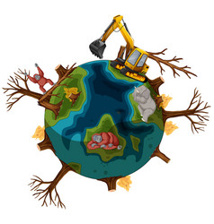

about Soil Pollution

Soil contamination or soil pollution as part of land degradation is caused by the presence of xenobiotics (human-made) chemicals or other alteration in the natural soil environment. It is typically caused by industrial activity, agricultural chemicals or improper disposal of waste. The most common chemicals involved are petroleum hydrocarbons, polynuclear aromatic hydrocarbons (such as naphthalene and benzo(a)pyrene), solvents, pesticides, lead, and other heavy metals. Contamination is correlated with the degree of industrialization and intensity of chemical substance. The concern over soil contamination stems primarily from health risks, from direct contact with the contaminated soil, vapour from the contaminants, or from secondary contamination of water supplies within and underlying the soil.
Pie chart of soil pollution


Causes of Soil Pollution
All soils, whether polluted or unpolluted, contain a variety of compounds (contaminants) which are naturally present. Such contaminants include metals, inorganic ions and salts (e.g. phosphates, carbonates, sulfates, nitrates), and many organic compounds (such as lipids, proteins, DNA, fatty acids, hydrocarbons, PAHs, alcohols, etc.). These compounds are mainly formed through soil microbial activity and decomposition of organisms (e.g., plants and animals).


{kind=link}
{kind=link}
{kind=link}
{kind=link}